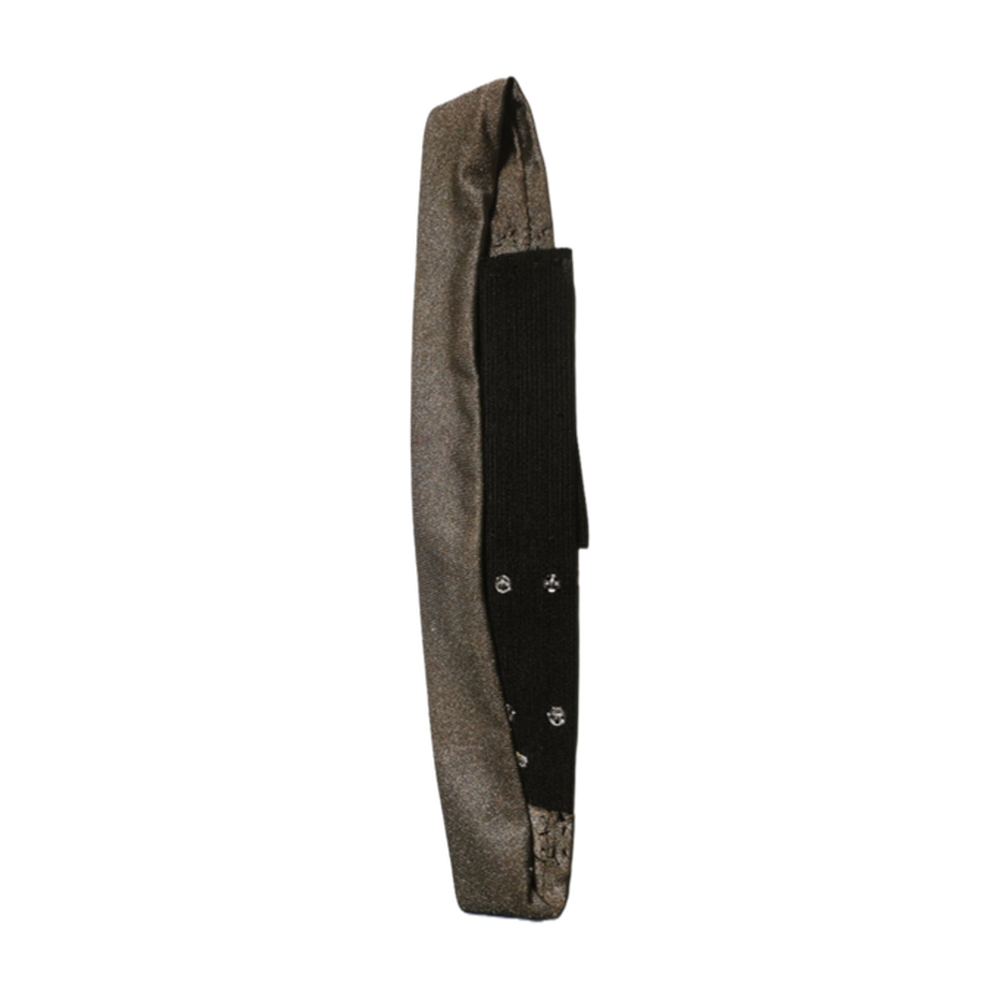
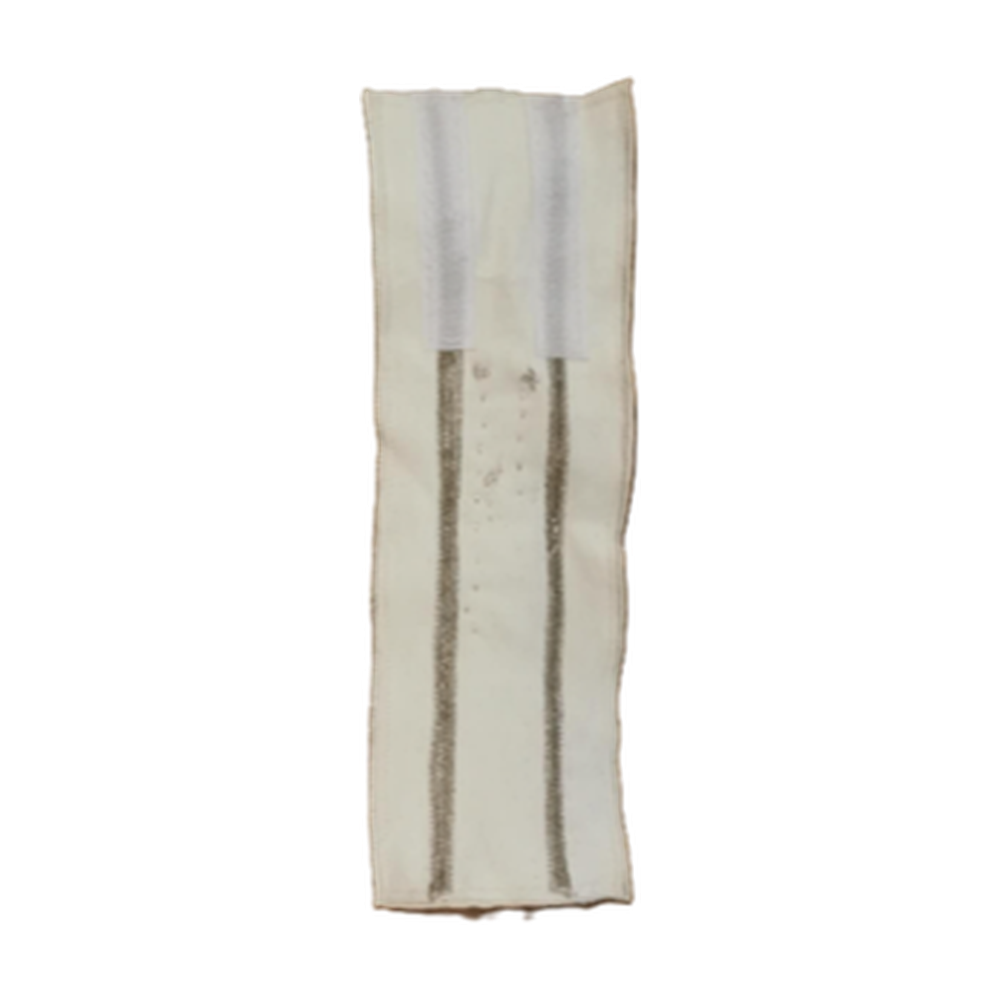
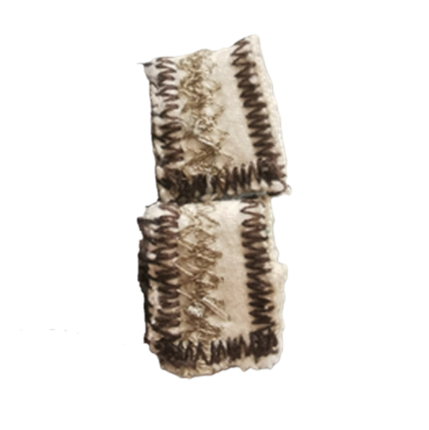

From Physiological Signals to Playful Biofeedback
It is essential to identify suitable sensor types when designing our prototype to detect physiological responses associated with stress. Research in affective computing and psychophysiology has demonstrated that several physiological signals provide reliable indicators of emotional arousal and cognitive load \cite{picard1997}. These signals include respiration, surface electromyography (sEMG), and galvanic skin response (GSR). Respiration sensors monitor breathing rate, depth, and rhythm, all of which are closely associated with stress and relaxation. sEMG sensors measure the electrical activity produced by muscle contractions and can be used to detect tension-related responses. GSR sensors measure changes in skin conductance, which reflect variations in sweat gland activity caused by emotional arousal. GSR sensing is commonly integrated into wearable devices such as smartwatches and stress trackers.
In our project, we developed textile-based sensors to detect these three physiological signals. Our primary focus, however, is on respiration, as breathing patterns play a key role in interactive stress-management applications involving guided breathing exercises. For respiration detection, we fabricated a sensor using conductive stretch fabric. The sensor operates on a resistive principle, meaning that its electrical resistance changes as the fabric stretches. By measuring the resulting voltage variations, we can estimate the user's respiration rate. For sEMG detection, we employed a similar fabrication approach to that used for the GSR sensor. Conductive silver threads were embroidered into fabric to function as textile electrodes. Our goal was to develop reusable e-textile electrodes that are more sustainable than conventional disposable electrodes while providing the comfort and flexibility of regular fabric. For GSR detection, we used conductive silver thread embroidered into regular fabric to create textile-based electrodes. The electrodes were integrated into a glove to improve ease of use and wearability. The entirely textile-based design makes the sensor soft, comfortable, and capable of fitting snugly around the fingers.
Respiration Sensor
A stretchable textile sensor detects expansion and contraction during breathing. Inhalation and exhalation are used as real-time inputs for the breathing game.

sEMG Sensor
Surface electromyography sensors detect muscle activity and classify the user’s state as relaxed or actively contracting.

GSR Sensor
Galvanic skin response sensing is used to explore emotional and physiological changes related to stress and arousal.
